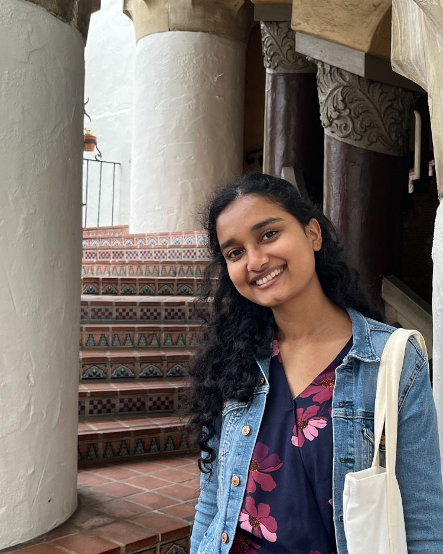

[Title of working paper]
Abstract
[Two to four sentences on the question, data and main finding.]

Add photo.jpg to the repo'">I am a PhD student in Economics at the University of Illinois Urbana-Champaign. I am an applied economist with interests in labor economics and public economics. I am from Kathmandu, Nepal.
Before starting my PhD, I was a research assistant at the Tax Policy Center, a joint project of the Urban Institute and the Brookings Institution in Washington, DC. There I worked on microsimulation of federal tax policy and on the state-level effects of tariffs. I received my BA in Economics from Reed College in 2023.
PhD Student
Department of Economics
University of Illinois Urbana-Champaign
[Two to four sentences on the question, data and main finding.]
Estimated the effects of federal tax policy with the Tax Policy Center microsimulation model, analyzed the state-level economic impact of tariffs, and studied housing supply, mortgage performance and home appreciation.
Compared worker mobility in the U.S. and Germany using the NLSY97 and the German Socio-Economic Panel. Extended into my senior thesis at Reed College.
I like to run. My favorite route goes through the Quad and around the Boneyard Creek loop, with a stop at Café Paradiso on the way. Someday I would love to run a marathon.
I also like to cook. I enjoy trying new recipes, and I cook Nepali food from home, like momo and dal bhat.
I am a regular NPR listener.